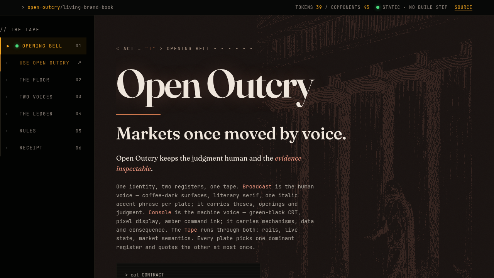
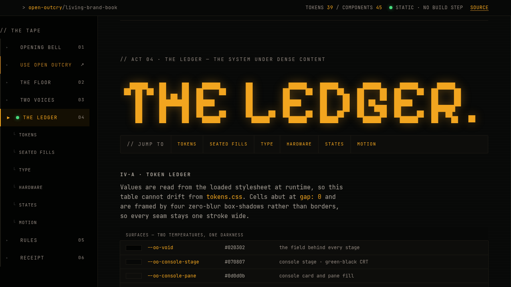

Hardware, signals, and the media discipline — one manual, searchable, verified.
A reusable illustrated-manual composition: desktop section navigation that reflows on a phone, explanatory imagery under the v1.7 instructional-media contract, sprite/name/mechanic rows, a labeled responsive table, section search, and optional disclosures.
tokens v1.4 · components v1.7 · illustrative specimen

Broadcast carries judgment, Console carries mechanism, and the Tape binds both to state. Every artifact picks one dominant register and quotes the other at most once — this manual is Console, quiet recipe: no crawl, no cursor, no liveness a dated document cannot honestly claim.

.oo-frame hairlines.examples/field-manual-assets/PROVENANCE.md · capture of this repository's index.html, commit 0b352bc + v1.7 working tree
Corners stay at 0–2px, strokes stay thin, and every control keeps mono chrome, a visible focus ring, and a 44px floor. The table reflows into labeled rows below 720px — the header row is visually removed, and each cell restates its column so a phone reader never loses which number is which.
| Class | Role | Composes with |
|---|---|---|
| .oo-pane | Smoky square hardware: cards, receipts, warnings, stats | .oo-pane--armed for the primary state |
| .oo-frame | Hairline as four shadows — abutting cells at gap 0 keep a one-stroke seam | ledgers, token tables, heat fields |
| .oo-btn | Control chrome: mono, uppercase, 44px minimum, focus ring | .oo-pane + .oo-hover |
| .oo-rail / .oo-tape | Path and state chrome; ticker strip with real counts | .oo-rail--foot, .art-static-strip (quiet) |
| .oo-plate-figure | Decorative atmosphere: masked engraving, register-tinted, aria-hidden | broadcast openers only — never content |
| .oo-media | Instructional content: original colors, intrinsic proportions, captioned | --crop (declared), --pixel (sprites), .oo-media-caption |
Color is earned by function. Six signals cover the whole semantic ramp; anything else is decoration and does not ship. Sprites are original 16px specimens rendered at an integer 3× through .oo-media--pixel — recognition rows, not an icon pack.
Green is state, not paint. A live dot means a real feed; a green number means up. A zero stays base ink — a red or green zero is a false alarm.
Red marks footguns and downside. Warnings get red boundary ink on square hardware — never modal panic styling.
Amber is the Console voice. The armed pane border marks the primary action; hover ignites, active inverts to black-on-voice.
The other register appears as a quotation. A Console pane quoted in Broadcast (or the reverse) is labeled machine output — never a 50/50 mix.
Blue is rare search-and-evidence ink. Never a background, surface, or glow — the one blue thing on a plate is the citation.
Violet marks external systems. Provider ink names the outside dependency; it never becomes atmosphere.
Two imagery classes, opposite laws. .oo-plate-figure is atmosphere: masked, register-tinted, opacity-capped, aria-hidden. .oo-media is content: a screenshot, a native asset, a diagram — original colors, intrinsic proportions, alt text, a caption, and provenance beside the artifact. The engraving-mask rules never touch an instructional image.
height: auto; aspect-ratio: auto keeps the loaded image's real ratio in charge..oo-media--crop covers it. Atmosphere framing only — cropping a screenshot you cite as evidence is falsification.The bug class this kills, measured on a production field manual: illustrations carried width: 100% in CSS while their markup kept a fixed height="1080" attribute. CSS width overrode the attribute width; the attribute height stayed. Every screenshot rendered vertically stretched, the cover cropped — and the overflow check stayed green, because a distorted image overflows nothing.
The correction keeps the attributes (they reserve layout and prevent shift) but takes their authority away: height: auto plus aspect-ratio: auto means the rendered box follows naturalWidth/naturalHeight at every container width. Verification then compares each rendered content box against the intrinsic ratio — borders subtracted, subpixel rounding tolerated — and fresh screenshots are inspected visually. Zero overflow alone is not sign-off.
A native sprite scales up crisp under image-rendering: pixelated at integer multiples (the signal rows above are 16px specimens at 3×). It never scales down: a downscaled sprite averages into grey mush — the same physics that makes the engraving mask crop rather than shrink.
Two files, in order: tokens.css then components.css. Put the dominant register on the consumer root, load the declared fonts, and keep composition page-local until two independent production consumers converge on the same shape — that is how .oo-media itself got in.
No sections match.